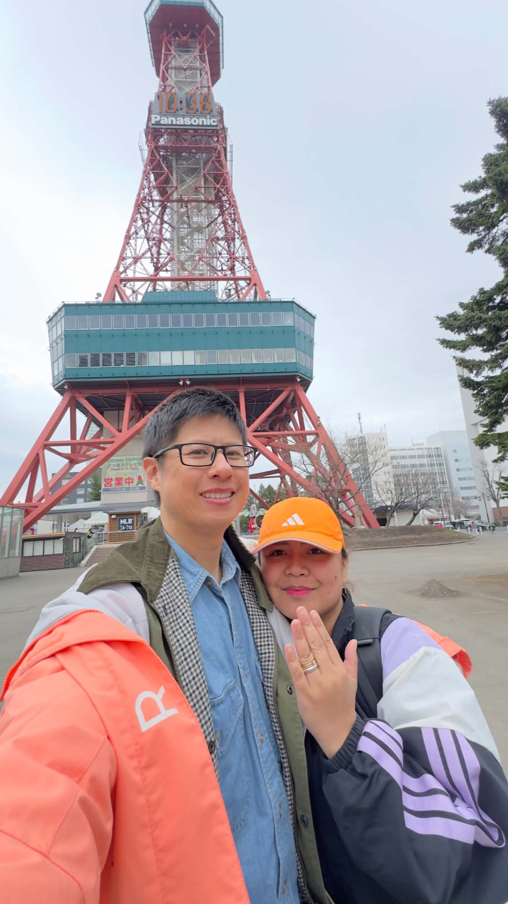

9:15 amBreakfast at Mora265 Arrowtown–Lake Hayes Road, in the Louvre space — in the garden, but heated and weatherproof. Sitting is 9:30 and a little early is fine. No pre-orders, so everyone orders on the day.
10:45 amDrive to ArrowtownFive minutes.
10:50 amWalk around ArrowtownBuckingham Street, the Chinese settlement, the river. Bring layers — it is colder than town. You have until about 12:55.
12:55 pmDrive to Kinross15 minutes, so you are there just before the table.
1:15 pmLunch at KinrossPizzas and platters, as the group voted.
2:30 pmClassic Wine ExperienceSame private room, no moving anywhere. You leave Kinross about 3:30.
3:30 pmDrive back to town35 minutes to Brecon Street.
Either, orLake Hayes, or the escape roomTwenty minutes at the Lake Hayes jetty on the way in, or an hour in a room once you are in town. One or the other.
5:15 pmBe at the Skyline baseThe one time to hold. Skyline want you 45 minutes before your luge session, so it books for 6:00.
6:00 pmGondola and lugeTwo runs and back down by about 6:55.
7:15 pmDinner at SODA2 Rees Street, lakeside, a seven-minute walk down from the gondola. Twenty of you, and the table is yours until 9:15.

Saturday 10 October
How the day runs
Where to be and what to bring.
2:55 pmBe at Canyon’s LodgeThe runsheet’s time for guests, and your car has you there by 2:50. The bride’s party comes at 3:05, ceremony 3:15.
4:45 pmWe move to the HiltonAbout 25 minutes. Your seat is under Find yourself below.
5:15 pmReception at Wakatipu GrillHilton Queenstown. Dinner, then the rest of the evening.
10:00 pmCarriagesThe venue closes. Whoever drove you here drives you home.
Find yourself
Type your name for your bed, who’s driving you there and who’s bringing you home.
Where you’re staying
The full car lists
Where things are
Bring a warm jacket. 10–16°C, and the ceremony is outdoors on the lawn.
Shoes for grass. There is a jetty and a lawn.
Sunset is 8:04 pm. The best light is the hour before it.
If the weather turns, we decide at 9:30 am and tell you.
With my little camera
I spy
Tap one to add your photo.
Have a look now, but these are for Saturday — the photographs are of the wedding day, not of tonight.
Tap your name and we’ll show you your bed, who’s driving you there and who’s bringing you home. Asked once, remembered on this phone, sent nowhere.
Send us yourphotos
A good view and the next adventure are where the two of us agree most. So send us
yours — the wedding, your travels, your favourite shot of
anywhere. We will be the ones scrolling through them, planning where to go next.
Three airlines, three sets of rules. Pack to the tightest of each and you never have to think about it again.
55 × 36 × 23 cm, and 7 kg.In inches that is 21.7 × 14.2 × 9.1 — so the tallest the bag can be is just under 22 inches. It is the smallest limit on each side across the whole trip. Measured with the wheels, the handle and the outside pockets. Bags are sold on their body size alone, so a case marketed as 20 inches often measures 22 or 23 once the wheels are counted, and that is over. Stand it up, tape from the floor to the top of the pushed-down handle, and keep it under 55 cm.
CebgoDavao to Manila56 × 36 × 23 cm, plus a personal item up to 20 × 20 × 35 cm. 7 kg for the two together — Cebu Pacific’s own limit went up to 10 kg, but 5J 958 is flown by Cebgo, and Cebgo is still 7.
PALManila–Brisbane, Melbourne–Manila56 × 36 × 23 cm, plus a personal item up to 45 × 35 × 20 cm — the most generous second bag of the three. 7 kg for both together.
Air NZBrisbane–Queenstown, Christchurch–Melbourne55 × 40 × 23 cm and no more than 118 cm added up, plus a small personal item. 7 kg, and they weigh at the gate as well as at check-in.
Going
Tue 6 Oct5J 958
4:05 pmDVODavao
2h 05
6:10 pmMNLTerminal 3
Bags
32 kg checked, one each · 7 kg hand
Counters
Open 1:05 pm, shut 3:05 pm · gate by 3:20 pm
Seats
36A and 36B — Joy is next to you, same as Manila to Brisbane
Checked in
Both of you, boarding group 2. Gate number is TBA and shows on the day; checked baggage is on the booking. The passes live in your phone wallet or the Cebu Pacific app — not here.
5 h 55 in Manila — but you land at T3 and leave from T1. The free airport shuttle runs between them every 30–40 minutes until 1:00 am; ask for the MIAA transfer. Move across early and wait on the T1 side.
Wed 7 OctPR221
12:05 amMNLTerminal 1
8h 00
10:05 amBNEInternational
Check in
The night of Tuesday the 6th — it leaves five minutes after midnight
Bags
30 kg checked · 7 kg hand · tagged through to Queenstown
50 minutes in Brisbane. Same terminal. Follow Transfers — do not go out to arrivals, do not stop. One ticket all the way, so a late landing is theirs to fix.
Manila to Davao is not booked.Nothing is held for the way home on the 25th. When it is booked: you land at T1 and a Cebu Pacific flight to Davao goes from T3 — the same shuttle, the other way.
The trip, day by day
Nineteen days, 7 to 25 October.Two quiet days and the rehearsal first, then the South Island with the family — Queenstown, Twizel, Aoraki, Lake Tekapo — then Wellington, the ferry, Abel Tasman, and back through Christchurch to the flight home.
Day 1 · Wed 7 Oct
You land, and move in 5 Golden Terrace Unit A — yours for the 7th and 8th
5:30 pmWheels down in QueenstownBags, then biosecurity — this is the queue where the boots get looked at. Have the declaration done already.
6:00 pmCollect the AquaQueenstown Airport. It is yours from 6:00 pm Wednesday until Saturday.
6:30 pmCheck in at 5 Golden TerraceUnit A. Check-in runs 3:00 to 8:00 pm, so you are inside it — but message Gary your arrival time before you fly, he asks for it. The key is in a lockbox on the black fence, just right of the garage. The code is in Gary’s message, not in here.
EveningNothing else is bookedEat something and sleep. You will have been awake since Tuesday evening and the first thing in the diary is a rehearsal.
The hot water will catch you out.It runs off an electric cylinder: about 25 to 30 minutes of hot water, and then three to four hours to heat again. Do not shower one after the other on the morning of the rehearsal.
If something is wrongJulie, on guest support, 10:00 am to 10:00 pm. Outside those hours the same number is emergencies only.
What to wearWhatever you flew in. It will be cold and probably light until late — October evenings in Queenstown run to about 7:30.
Day 2 · Thu 8 Oct
The rehearsal, then the lake road
10:00 amRehearsal at the aMoment studio40 Headley Drive. The complete runsheet and ceremony, start to finish, with Summer. The bridal party is welcome.
11:45 amInstax film, Five Mile at FranktonThe Warehouse and Noel Leeming sit in the same centre on Grant Road, so whichever has it. Three twin packs — sixty shots. Thirty-six guests, a card each, and the duds are what catch people out. Spare AA batteries while you are there. Carry the film inside tonight; a freezing car ruins it.
12:30 pmLunchFive Mile has food, or drive the ten minutes back into town.
1:00 pmOut to Glenorchy and backForty-five minutes each way along the lake, and the one famous drive here that is not already in the next two weeks. Stop at Bennett’s Bluff lookout — signposted, ten minutes, no walking. Coffee at Glenorchy, look at the wharf, turn around. Leave Glenorchy by 3:00.
4:00 pmRead the vow notes — ten minutesOn the welcome screen, Writing the vows. Three beats, four questions, and what not to say. Read it before dinner, not at the table.
5:45 pmShower, both of you, back to backTwenty-five minutes of hot water and then three hours to recover. Stagger them and the second one is cold.
6:30 pmDinner at NestAt Kamana Lakehouse, 139 Fernhill Road — up the hill, the same side of town as the house you move into tomorrow. Just the two of you, three courses, and the table is yours until 8:30. This is where the vows get written — take paper and two pens, answer the four questions apart, and do not read each other’s. They hold it for fifteen minutes and no longer, so leave early enough. There is a fireplace in the lounge if you want a drink first.
The shot list — twenty-four framesThe board, one frame at a time, in its own order. Tap a row when it is taken. Sunset is 8:01 and the light goes at 8:31.
What to wearOrdinary clothes — it is a walk-through, not a dress rehearsal.
Day 3 · Fri 9 Oct
You move to the hotel, and the family arrive Frankton Road from tonight — Fern Hill is the family’s house, not yours
11:00 amThe family landTheir flight, not yours — you have been here two days. Arrivals is small and the taxi queue is long right after a landing.
10:00 amCheck out of 5 Golden TerraceHard time — a late checkout has to be asked for a day ahead and may be charged. Two nights only.
12:00 pmInto the hotel on Frankton RoadYour bed from tonight, and where hair and makeup happen on Saturday morning. You have the Aqua, so no waiting for a car. The family go to 13 McKerrow Place, Fern Hill — that one is theirs.
12:30 pmInto townBags down, so head back in.
1:00 pmLunch — Fergburger or Devil BurgerOn the waterfront, then a walk along Queenstown Bay. There is a queue even off-season; order ahead on the Fergburger app if you would rather not stand in it.
2:30 pmOne of two walksQueenstown Hill is a steeper hour and a half up and back, for the view over the lake and The Remarkables. The Gardens and lakefront is flat, with a café and grass. No wrong answer.
4:00 pmGroceriesBreakfasts and snacks for the road days ahead, while you are already central. Alpine Supermarket on Shotover Street, Fresh Choice or Raeward Fresh — all walkable.
5:00 pmDrop the shopping, changeQuick turnaround — dinner is earlier than you think.
5:30 pmWelcome dinner at Public Kitchen5:30, not 6:30 — six o’clock was taken, so the booking moved earlier. Two hours, so the table goes at 7:30. It is two bookings side by side: 18 outside on the deck, 12 indoors with the elders and the little one, each paying its own bill. The outdoor group’s food is pre-ordered; indoors orders on the day. It is also Grace’s birthday — there is a chocolate cake coming, and she is sitting with the indoor twelve. Black and white, smart casual, which reads dressier than smart casual alone.
What to wearDay: activewear — leggings or jeans, sneakers, a breathable tee, a zip fleece. Evening: black and white, smart casual, and a warm coat. Queenstown turns cold after dark.
Day 4 · Sat 10 Oct
The wedding
5:15 amUpEarly, but the whole day is the wedding. Lay everything out the night before — hair and makeup run on a tight clock.
6:00 amCalltimeHair, makeup and getting ready. Eat a real breakfast first; an early calltime makes it easy to skip a meal and regret it.
2:30 pmCeremony and receptionAt The Canyons B&B. Keep a light layer near you even if it looks sunny — the weather here turns fast, and the photos are outdoors.
What to wearMorning: something comfortable for hair and makeup. The day: formal. Keep a wrap, blazer or coat to hand for the outdoor photographs.
Day 5 · Sun 11 Oct
Arrowtown, the wineries and the gondola
9:15 amBreakfast at Mora265 Arrowtown–Lake Hayes Road, in the Louvre space — in the garden, but heated and weatherproof. The sitting is 9:30 and a little early is fine. No pre-orders, so everyone orders on the day.
10:45 amDrive to ArrowtownFive minutes.
10:50 amArrowtownBuckingham Street, the Chinese settlement, the river. The settlement is free and tucked along the water — easy to walk past, worth the few minutes. Bring layers; it is colder than town. You have until about 12:55.
12:55 pmDrive to Kinross15 minutes, so you are there just before the table.
1:15 pmLunch at KinrossA shared cellar door for several of the small Gibbston wineries. Pizzas and platters, as the group voted.
2:30 pmClassic Wine ExperienceThe same private room, so nothing to move. Pace it — the pours are generous. You leave Kinross about 3:30.
3:30 pmDrive back to town35 minutes to Brecon Street.
Either, orLake Hayes, or the escape roomTwenty minutes at the Lake Hayes jetty on the way in, or an hour in a room once you are in town. One or the other, not both.
5:15 pmBe at the Skyline baseThe one time to hold. Skyline want you 45 minutes before your luge session, so it books for 6:00. Buy the tickets online beforehand and skip the queue.
6:00 pmGondola and lugeOne of the steepest cable cars in the southern hemisphere. Two runs, and back down by about 6:55.
7:15 pmDinner at SODA2 Rees Street, lakeside, a seven-minute walk down from the gondola. Twenty of you, and the table is yours until 9:15.
What to wearSmart-casual winery clothes. Bring a warm windproof jacket, sunglasses, and a beanie or scarf for the top of the gondola and the wait for the sun.
Day 6 · Mon 12 Oct
Deer Park Heights, the Clay Cliffs, Twizel 31 Maryburn Road, Twizel — your bed for the 12th and 13th
7:00 amUpRoad day. Use the groceries from Friday rather than hunting for a café before an 8 am start.
8:00 amPick up the car and check outThe road trip starts here.
8:15 amDeer Park HeightsFive kilometres of private road above Lake Wakatipu, with deer, llamas, alpacas and pigs to feed, past several Lord of the Rings locations. Ten minutes out at Frankton and on the way to Cromwell, so no backtrack. Book online first — entry is capped daily.
9:30 amLindis Pass, then the Clay CliffsWind-cut silt and clay pinnacles out of the high country. Wear shoes you do not mind ruining — the gravel gets into everything. Until about 12:15.
1:30 pmHigh Country SalmonFeed the salmon, then a poke bowl made from them. The on-site smoker is what makes it different from everywhere else on the trip.
2:45 pmSkydive, or the lookoutJumping: tandem over Aoraki, Lake Pukaki and the Alps, from Pukaki Airport ten minutes away — budget three hours door to door, and tie your hair back. Not jumping: Peter’s Lookout, the postcard view of Lake Pukaki with Aoraki behind it, then straight to check-in.
4:00 pmCheck in at TwizelSkydivers check in whenever they are back down.
7:00 pmDinner — Ministry of WorksTwizel pub food, everyone back together. Portions are large; share a starter. Shawty’s Cafe nearby is the lighter option.
What to wearRoad-trip casual, with sturdy sneakers for the dust at the Clay Cliffs. Jumping: closed-toe shoes and layers you can move in, since the jumpsuit goes over your clothes. An extra warm layer after dark — Mackenzie Country drops fast.
Day 7 · Tue 13 Oct
Mount Cook by helicopter, then the Hooker Valley
6:30 amUpA heli flight, a glacier landing and ten kilometres on foot. This is the morning to sit down to a cooked breakfast.
7:45 amHelicopter check-inSafety briefing. The earliest slot of the day has the calmest air and the best buffer if the weather moves.
8:30 amOver the Tasman GlacierTwenty-five minutes, with a landing on the snow high in the alpine.
9:30 amTasman Glacier walkA short walk to ground-level views of icebergs on the lake — the other half of what you just saw from the air. Sunglasses: the glare off the ice is fierce even under cloud.
10:30 amLunch and a restThe Alpine Salmon stand by the lake is the easy option. If you want more: Kea Point if you are saving your legs, the Hillary Alpine Centre if the weather turns. Until 1:45.
2:00 pmHooker Valley TrackThe country’s most-walked alpine track — ten kilometres return, three swing bridges, Aoraki at the end. Three to four hours, back at the car by 5:30–6:15. No food on the trail and almost no shade: carry lunch and start hydrated.
6:30 pmThe Old Mountaineers’ CaféStraight off the track, with just enough time to rinse off. Sir Edmund Hillary opened it. The fireplace tables go first on a cold night.
7:40 pmPeter’s Lookout, if there is anything leftOn the road back, no detour either way, timed for the colour at about 7:50. Entirely fine to skip after that hike.
8:30 pmBack in TwizelIn the dark, but sealed road the whole way.
What to wearProper hiking kit: thermal base layer, hiking trousers, a warm mid-layer, a windproof shell, sunglasses, boots. One more warm layer for the helicopter — it is cold up there on a clear day.
Day 8 · Wed 14 Oct
Lake Tekapo, and a night under the stars Hap House, 22 Mistake Drive, Lake Tekapo — your bed for the 14th and 15th
7:00 amUpPack the car before breakfast if you can.
8:00 amDrive to TekapoThree quarters of an hour north.
9:30 amThe petting zooFeeding merino sheep and alpacas by hand. Bring sanitiser — there is not always a tap right there.
10:30 amAstro Café, Mt JohnAt the summit beside the observatory, and often called one of the best-placed cafés in the world. Just the drive up, the view and a coffee — no observatory ticket needed. Counter food moves far faster than a sit-down order.
12:00 pmPicnic at Tekapo Regional ParkLakeside, among the pines. Nothing on site, so buy at the Four Square or the bakery in town first.
1:45 pmCheck in at Hap HouseDrop the bags.
2:00 pmThree ways to spend the afternoonBike the lakefront trail — flat and easy, and it passes the church for a daytime photograph. Walk Lake McGregor and Lake Alexandrina, quieter. Or sleep. Until 5:00.
5:30 pmDinner by the lakeT.L.V. sits right for the alpenglow; Dark Sky Diner has the floor-to-ceiling windows. Book a window table ahead — they go first.
6:50 pmChurch of the Good Shepherd, sunsetThe most photographed church in New Zealand, on the shore. This is the evening’s point. Be there ten or fifteen minutes before the sun actually goes — the best light is in the last few minutes.
9:45 pmStargazingFrom the house. Properly dark about two hours after sunset, and you can keep going as late as you like. Let your eyes adjust for a full twenty minutes without looking at a phone; one bright screen resets it. If the sky is clean, the church is a ten-minute drive for a Milky Way shot.
What to wearCosy and casual by day, with closed shoes for the animals and the bike. At night, your warmest coat, a beanie and gloves — Tekapo gets properly cold, spring or not.
Day 9 · Thu 15 Oct
Sunrise, then Christchurch A hotel by Christchurch airport that night
6:15 amOnly if you want itPack the night before so this is a fast turnaround. Everyone else sleeps to about 6:45 and meets at checkout.
6:35 amSunrise at the churchSunrise is about 6:47. No crowds, and completely different light from the evening before.
7:20 amCheck out, drive to ChristchurchAbout three hours, with a stop at Fairlie Bakehouse. The mince and cheese pie sells out first — get there before the tour buses.
11:00 amRiverside MarketStreet food along the Avon in the centre. Go hungry and split several small things rather than ordering one big one. Until about 2:00.
2:30 pmThe Botanic Gardens, or puntingPunting is calmer and better value late in the afternoon once the midday groups clear.
6:00 pmDinner near the airportKeep it light with an early flight coming. The Novotel restaurant or Good Thai nearby.
7:30 pmCheck in at the hotelPack, and an early night.
What to wearCity casual — good jeans, a long-sleeve top, a trench or leather jacket, and shoes you can walk all day in.
Day 10 · Fri 16 Oct
Christchurch to Wellington
8:00 amSleep in, slow breakfastThe first week is behind you. Nothing to catch until late morning.
9:15 amBags and checkoutPacked and out before the airport run.
10:00 amTo the airportChristchurch, for the hop north.
11:30 amFly to WellingtonAcross the strait by air, an hour or so.
1:00 pmCheck inDrop everything and go straight back out.
2:00 pmLate lunch on Cuba StreetThe street to eat on in Wellington — it is all cafes, bars and buskers.
3:45 pmRest, or family timeDeliberately empty. You have just done eight days.
6:30 pmFamily dinner
What to wearCity clothes and a windproof layer. Wellington earns its nickname — it is reliably windier than anywhere you have been so far.
Day 11 · Sat 17 Oct
Wellington
9:00 amRed Rocks coast walkThe south coast out to the fur seal colony. Flat, and about two hours. The seals are wild and hauled out on the rocks — keep your distance and they will ignore you.
12:00 pmLunch
1:30 pmMount Victoria and Oriental BayUp for the view over the harbour, then back down along the bay.
4:00 pmRest
5:15 pmAn early dinnerEarly on purpose — tonight runs late.
7:30 pmZealandia by nightA guided evening walk through the fenced sanctuary, with a real chance of seeing a wild kiwi, plus glowworms. Book it; the night tours are small and they sell out.
What to wearWalking shoes for the coast in the morning, and something warm for standing still in the dark at Zealandia.
Day 12 · Sun 18 Oct
Wellington, slowly
8:00 amSleep in
10:00 amHarbourside MarketThe Sunday produce market on the waterfront.
12:30 pmThe afternoon, togetherOr the cable car up and a walk down through the Botanic Garden.
5:30 pmFamily dinnerAn early night — the ferry goes in the morning.
What to wearComfortable and warm. The waterfront is exposed.
Day 13 · Mon 19 Oct
The ferry to Picton, then Nelson
7:30 amTaxi to the terminalBe early. The ferry does not wait, and foot passengers still have to check in.
8:45 amInterislander to PictonThree and a half hours — across Cook Strait, then an hour winding through the Marlborough Sounds. The Sounds leg is the best part; be outside on deck for it, however cold.
12:30 pmInto Picton
1:15 pmLunch
2:00 pmDrive to NelsonAbout two hours, via Havelock and the Queen Charlotte road.
6:30 pmCentre of New Zealand lookoutA short climb up the hill above Nelson to the surveyors’ marker the country was measured from.
8:00 pmDinner in town
What to wearLayers, and a windproof jacket for the deck. It is cold out on the strait even in good weather.
Day 14 · Tue 20 Oct
Abel Tasman
7:15 amDrive to MārahauThe gateway to the park, and an early start.
8:30 amWater taxi, kayak, walkInto the park by boat, a paddle past the Tonga Island seal colony, then part of the Coast Track on foot back out. If the water is too rough to kayak, take the water taxi and walk the longer stretch instead — that is the plan, not a failure of one.
4:00 pmDrive back
6:30 pmDinner
What to wearThings that can get wet, and a change of clothes in the car. Sunscreen and a hat — it is open water and there is no shade on a kayak.
Day 15 · Wed 21 Oct
Nelson back to Christchurch
8:00 amBreakfast and check out
9:15 amReturn the car
10:30 amFly to ChristchurchFlying, not driving — it saves the day.
11:45 amCollect the bags
12:30 pmTaxi into town
2:45 pmQuake City and the Cardboard CathedralThe 2011 earthquake, and what the city built afterwards. The cathedral really is cardboard, and it was meant to last a decade.
6:30 pmHe Puna TaimoanaHot pools on the New Brighton seafront, looking out at the Pacific.
What to wearSwimming things packed somewhere you can reach them, not at the bottom of a bag.
Day 16 · Thu 22 Oct
Hanmer Springs One night at Hanmer
8:00 amPack lightOne night only — take an overnight bag, leave the rest.
8:30 amPick up the car, drive northFrom the city depot, then about two hours. The mountain reception is patchy, so download the route before you go.
11:45 amLunch in Hanmer
1:30 pmThe forest trails, if you want themBikes can be hired in the village for the Hanmer forest.
5:00 pmThe thermal poolsHot pools in cold mountain air, which is the whole point of coming. Stay the night.
What to wearAn overnight bag, swimming things on top, and your warmest layer for walking between the pools.
Day 17 · Fri 23 Oct
Hanmer back to Christchurch Back to the same city hotel
8:00 amConical Hill walkShort and steep, straight up from the village, for the view over the basin.
9:30 amBreakfast
11:00 amDrive back to ChristchurchAbout two hours, to the same hotel as before.
2:00 pmSumner and Godley HeadThe beach, a coffee by the sea, and the clifftop walk above the harbour.
6:30 pmThe last dinner out
What to wearWalking shoes in the morning and something you would happily be photographed in at dinner.
Day 18 · Sat 24 Oct
Lyttelton, and packing An airport hotel tonight
8:45 amCheck out
9:30 amDrive over the hill
10:00 amLyttelton farmers marketThe Saturday market in the port town over the hill from the city.
12:30 pmThe Summit RoadAlong the crater rim above the harbour, with stops for the view.
3:15 pmGet petrolBefore the depot, not after. A rental goes back full or they refuel it for you at their own price.
4:00 pmReturn the car
4:45 pmThe airport hotelLast bags, last repack.
6:15 pmDinner, then an early nightThe alarm goes at about 3:30 am.
What to wearAnything. Pack everything else tonight — there is no time in the morning.
Day 19 · Sun 25 Oct
Home
4:00 amAt Christchurch airportNZ213 goes at 6:00. See the flights at the top of this sheet — Melbourne, sixty-five minutes, then Manila by 2:25 pm.
What to wearWhatever you can sit in for seventeen hours: soft, warm, slip-on shoes.
Borders and paperwork
Both New Zealand visas are approved.Visitor visas, multiple entry, good until February 2027 and up to two months per entry — eighteen days sits well inside that. They are eVisas, so there is nothing stuck in your passport, and that is the catch: print both letters and carry them with your passports. The airline can refuse to board you without one, and the border can ask for it. Have the return ticket where you can reach it too, and a card — they are allowed to ask you to show you can support yourselves and leave again.
Then four things, all online, all free, none of them done at a counter. In the order you need them.
eTravelLeaving the PhilippinesRegister within 72 hours of departure — so from Saturday the 3rd onwards, and no later than the morning of the 6th. Both of you, separately. You get a QR code; screenshot it.
NZTDNew Zealand Traveller DeclarationCompulsory for everyone, and it has replaced the paper card they used to hand out on the plane. About ten minutes, in English, and it needs your passport, the flight details and a list of what you are bringing in. It opens 24 hours before you set off and has to be done before you reach passport control. Do it during the Manila layover — you have six hours at T1 and nothing else to do with them. Do not leave it for Brisbane; you have fifty minutes there.
TransitBrisbane and Melbourne — nothing to fileA Philippine passport transits Australia without a visa for up to eight hours. Yours are fifty minutes and sixty-five. Two conditions, and they are the whole deal: stay airside, and do not collect a bag. Clearing immigration for any reason turns it into a visa you do not have. Your bags are tagged through both ways, so there is nothing to collect.
eTravelComing homeThe arrival registration is a second, separate one — within 72 hours of landing in Manila. Do it from the airport hotel on the 24th, while you still have proper wifi.
The boots are the thing New Zealand actually cares about.Biosecurity there is the strictest you will have met, and the fines are issued on the spot. Between Hooker Valley and the Abel Tasman coast track you are bringing hiking boots — scrub the soil out of the treads before you pack them and tick the box on the declaration anyway. Same for a tent, a walking pole, anything that has been on a farm. Food, including snacks from the plane: declare it. Declaring something is free and takes a minute; not declaring it is the expensive mistake.
Make the airports easy on yourselves.Put PAL, Air New Zealand and Cebu Pacific on your phones before you go and sign in while you are on home wifi. Check in online the day before each flight — that is also how you pick seats. Add each boarding pass to Apple Wallet so it is on the lock screen, not in an inbox. Screenshot everything with a QR code: both eTravel codes, the declaration receipt, every boarding pass. Airport wifi fails at exactly the wrong moment, and a screenshot never does.
Five people, ninety seconds each, about eight minutes. Grace calls the names. Run it at 7:00, between the main being cleared and the cake at 7:30 — the photographer leaves at 7:55, so this has to be before then.
1Jun2xThe very first time you met Joy — or Patrick.
2LorenThe moment you knew these two were it.
3NikkaA time Patrick made you cry with laughter.
4SamA travel disaster starring either of them.
5JaneThe story you will still be telling at their 50th.
If someone freezes or does not make it:Emman, on “Patrick is the only person I know who…”, or Norrie on any of the story cards. Nelly, Vicente, Grace and Francis already have the speeches at 6:10 — leave them out of this one.
Thursday 8 October · Nest, over dinner
Writing the vows
Read this before you sit down. Then put the phone away — the rest happens on paper.
FirstAgree three things before you order
How long. One minute each, spoken aloud — about 150 words. Short vows are remembered; long ones are endured
Whether you read each other’s. Our answer is no. Hearing it for the first time on Saturday is the whole point
The register. If one of you is funny and the other is solemn it lands lopsided. Warm, with one laugh in it, is the easiest thing for both of you to hit
Two minutes on this saves an argument at the table later.
The shapeThree beats, in this order
Beat oneWhat stood out the first time you met them. Not the story of how you met — the one detail you noticed.
Beat twoWhat you love about them. Not about the relationship, not about us, not about how far we have come. Them.
Beat threeWhat you hope for in this next chapter. Do not stop at the compliment.
That is a whole vow. Those three beats plus two promises and you are finished.
At the tableFour questions, answered apart
Write on paper, no conferring, no editing. Ten minutes each. Then stop and eat.
The first thing I noticed about you
The thing you do that nobody else would notice
The hardest thing we got through — and what you did
One thing I promise to keep doing when it is boring
The answers in that order are already the vow. One, two, three, then the promise.
The promisesSpecific, or they are not promises
No“I promise to always make you happy.” Nobody can keep that and everyone has heard it.
Yes“I promise to make the coffee.” Small, true, keepable — and the room will laugh and believe you.
Two or three promises, not ten. One of them small enough to be funny.
Before you sleepRead it out loud, once
Anything you stumble over is a sentence written for the page, not the mouth. Cut it
Time it. Over ninety seconds, cut your second-best paragraph — the weakest one is already gone
Say their name at least once. It lands every time
No inside joke that needs explaining, nothing about money, nobody who is not in the room
On the cardSummer hands them over Thursday morning
Draft on paper. Copy onto the card once — not three times until it is neat
Print, do not join the letters. Big enough to read at arm’s length with wet eyes
The Canyons is outdoors. A card holds in the wind; a loose sheet of paper does not
Francis has the rings from the rehearsal. Nobody holds your card — it goes in your own pocket
The first one is where the three beats above come from. The third is worth it for tone — listen to how slowly she goes.
Saturday 10 October · Wakatipu Grill
Your script
Everything in quotes is yours to say. Everything in a grey box is something to do.
Before you startYour five rules
Speak clearly, a little slower than feels natural
Smile before the punchline, pause after it
Do not fill every silence — let music, applause and feeling breathe
Keep transitions short unless this says otherwise
Check Joy all evening: dress, bouquet, water, photos, timing, comfort
Scroll one section at a time. Everything in quotes is yours to say; everything in a grey box is something to do or a cue for the DJ.
5:15Welcome, housekeeping and their story
WaitLet the room settle. The DJ takes every music cue from you.
DJCelebrate Good Times (Come On) — loud enough to lift the room, quiet enough that you are heard.
“Good evening, everyone!”
“Can I ask everyone to please remain standing for just a moment?”
“First of all, welcome, and thank you all so much for being here tonight to celebrate two very special people — Joy and Patrick.”
DJMusic down, still playing.
“And before we get started, I want to do a very quick energy check.”
“Can I hear your loudest cheer for Joy and Patrick?”
They cheer.
“Okay… that was very polite.”
Pause. Look around.
“Come on, guys — I know we can do better than that!”
“One more time — let me hear you!”
Louder.
“YES! That’s much better!”
“Now THAT sounds like a wedding!”
“Thank you, everyone. You can take your seats — you’ve officially passed the energy check.”
“Now, make yourselves comfortable, because we’ve got a wonderful evening ahead of us.”
“For those who don’t know me, I’m Grace — Joy’s sister and Maid of Honour. And it seems my sister has discovered the ultimate wedding hack: instead of hiring an MC, simply give the Maid of Honour a microphone and hope for the best.”
“But honestly, it is such a privilege to be standing here tonight, surrounded by the people who mean the most to Joy and Patrick.”
DJMusic stops.
HousekeepingThe practical bit
“First, if you’ve had a few drinks already and you’re wondering where the toilets are — don’t panic.”
Fill inThe toilets are — say where. Find out before 5:15.
“If you need anything throughout the evening, our wonderful events team will be around to help.”
“And please follow any instructions from the team, particularly if we move outside for photographs and the sparkler send-off later.”
“And of course, phones are very welcome tonight! Take photos, take videos, get your selfies — and capture all those special moments.”
“You’ll find a QR code around the venue. Just scan it with your phone, tap ‘Open the Album’, and upload your favourite photos and videos — no app needed!”
“And some of your photos will even be printed here tonight for you to take home.”
“So get snapping, everyone — let’s fill Joy and Patrick’s album with memories from tonight!”
Their storyHow they met
“Now that we’ve covered the important housekeeping — and established that I’m already slightly stressed — let’s talk about the two people who actually brought us all here today.”
DJThis Will Be (An Everlasting Love), Toners — under your voice.
“Because if you’re anything like me, you probably know one of them really well… and the other one you’ve mostly heard about through stories.”
“Joy and Patrick actually met online.”
“Yes — online dating really did work.”
“So for anyone who is still swiping… there is hope.”
“Patrick made the first move.”
“Which is probably the most important decision he has ever made.”
“Their first date was during the pandemic, so naturally, romance looked a little different.”
“They met in a car park, had pizza and beer…”
“Joy had the pizza. Patrick had the beer.”
“And somehow, from a pandemic car-park date involving pizza and beer, we ended up here tonight.”
“So, ladies and gentlemen… I think you’ve now learned a little bit about our bride and groom.”
“But now it’s time to actually welcome them.”
5:30The entrance
Guests seated
Bridal party ready
DJ ready
Couple ready
DJI Gotta Feeling. You have about 27 seconds of talking.
“Alright, ladies and gentlemen, it is officially time to get this celebration started!”
“Get your phones ready, and get those hands ready to clap!”
“We’re about to welcome the amazing people who will stand beside Joy and Patrick today.”
“Let’s give them the welcome they deserve!”
Final cue“LADIES AND GENTLEMEN… OUR ENTOURAGE!”
TimingThe party walks in on the words “I gotta feeling” — 0:29 into the song. Music keeps playing.
“And now, I need everyone on their feet.”
“Ladies and gentlemen, please welcome our newlyweds — MR AND MRS PATRICK AND JOY YAP!”
DJShut Up and Dance. Music stops after their dance.
“Let’s all cheer for our newlyweds — the main reason why we are all gathered here. Let’s give them a round of applause once more.”
5:40The family dances
“And now, please welcome Joy and dad, along with Patrick and mom, to the dance floor for two special family dances. Let’s give them a warm round of applause as they celebrate this beautiful moment together.”
DJThe Way You Look Tonight, Michael Bublé.
“Thank you so much, mum and dad, for sharing such a beautiful moment with us — and for being such an important part of this celebration.”
“So, ladies and gentlemen, please join me in welcoming our newlyweds, Joy and Patrick, for their first dance as husband and wife.”
“Let’s give them a big round of applause.”
DJThinking Out Loud.
The cakeFirst decision as a married couple
“Thank you, Joy and Patrick.”
“And now, another very important part of married life…”
“The cake.”
“This is the first major decision they’ll be making together as a married couple.”
“Let’s see how they negotiate this one.”
“Ladies and gentlemen, let’s give them a round of applause as they cut their wedding cake!”
DJBuild Me Up Buttercup.
5:50Entrée
“Alright everyone, you’ve done very well so far.”
“You’ve applauded, you’ve danced, you’ve survived my introduction…”
“Now it’s time for the important stuff.”
“Dinner is being served!”
“Please enjoy your entrée.”
6:20Main course
“I hope everyone enjoyed their entrée.”
“And don’t worry — we’re not keeping you waiting.”
“The main course is coming straight out.”
Main served at 6:25.
6:40Speeches
OrderLara Mae → you → Francis. Four minutes each, maximum.
“Ladies and gentlemen, may I please have your attention.”
“We’re now moving into the speeches.”
“And we’re going to start with someone very special to Joy and Patrick.”
“Please put your hands together for Lara Mae.”
After Lara Mae:
“Thank you, Lara Mae.”
“And now it’s my turn.”
YouYour Maid of Honour speech. Four to five minutes.
After your speech:
“And now, continuing with the speeches, please welcome Patrick’s best man, Francis.”
6:45The quiet check
Do not announce thisNothing is said out loud. This one is just you, moving.
Check the planner
Check Joy
Water available
Ready for the next thing
7:10Wedding trivia
HostLara, about 15 minutes.
“Alright everyone, I hope you’re ready for a little test.”
“It’s time for wedding trivia!”
“I’m going to hand this one over to Lara, who’s going to put all of you to the test.”
7:25Sunset photos
Nothing to sayThis is all Maid of Honour work.
Joy’s dress
Bouquet
Photographer
Keep the guests occupied
Sparklers
People ready for the patio
7:35Sparkler send-off
“Alright everyone, we’re heading outside for something a little more magical.”
“Please follow the team’s instructions and get yourselves into position for the sparkler send-off.”
“And when Joy and Patrick come through, let’s make some noise for them!”
7:45Dessert
“Ladies and gentlemen, dessert is now being served. Please enjoy!”
7:52Nelly and Vicente
“Ladies and gentlemen, may I have your attention once again.”
“We’re now going to hear from two very special people in Joy’s life.”
“They have been there through every chapter, every milestone, and everything that has brought us to this day.”
“Please join me in welcoming our parents, Nelly and Vicente.”
Four minutesLet the emotion breathe. Do not rush them.
After:
“Thank you, Mom and Dad, for those beautiful words.”
8:00The duet
“And now, we’re going to move from speeches to a little live entertainment.”
“Please give a big round of applause for JP and Marge.”
SongFinally Found Someone.
8:05A story, please
“Alright everyone, it’s time for some wedding games. To take us through the games, we have someone special — one of Joy’s best friends, Lara!”
Lara calls these fiveJun2x — the first time you met Joy or Patrick · Loren — the moment you knew these two were it · Nikka — a time Patrick made you cry laughing · Sam — a travel disaster starring either of them · Jane — the story you will still be telling at their 50th. Ninety seconds each.
8:20Joy and Patrick speak
“Ladies and gentlemen, we’ve reached one of the final moments of our evening.”
“And now, let’s hear from the two very special people at the heart of tonight’s celebration — Joy and Patrick.”
“Please give a huge round of applause for Joy and Patrick!”
8:30Dance floor
“Thank you, Joy and Patrick.”
“And with that, the formal part of our evening is officially over.”
“Which means there’s only one thing left to do.”
“DANCE!”
“The dance floor is officially open!”
9:00Closing, if the venue calls it
“Ladies and gentlemen, we’ve reached the end of our evening.”
“On behalf of Joy and Patrick, thank you so much for being here, for celebrating with them and for making today so special.”
“You’ve been a wonderful audience… and I have successfully completed both of my jobs without getting fired.”
“One final time, let’s hear it for Joy and Patrick!”
“Have a safe journey home, everyone, and good night!”
If it stallsLines to reach for
“We’re just giving our newlyweds a moment — apparently weddings don’t always run on Google Calendar time.”
“Well… this is awkward.”
“I’ll give everyone five seconds to finish that conversation… five… four… three…”
“I love this story, but we’re working with a very strict wedding budget… and apparently that includes storytelling time.”
“I’m going to stop you there before this becomes a Netflix series.”
“And this is the part where I pretend I know exactly what’s happening.”
All nightYour other job
Water for Joy
Dress, hem, train
Bouquet
Makeup and hair
Photographer cues
Sunset photo timing
Sparklers ready
Check Joy before the speeches
Check Joy before the games
Check Joy before dancing
Phone and this sheet within reach
You are not there to talk constantly. You are there to make the evening feel effortless, keep everyone informed, protect the timing, and make sure Joy enjoys her wedding.